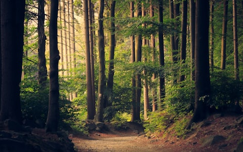
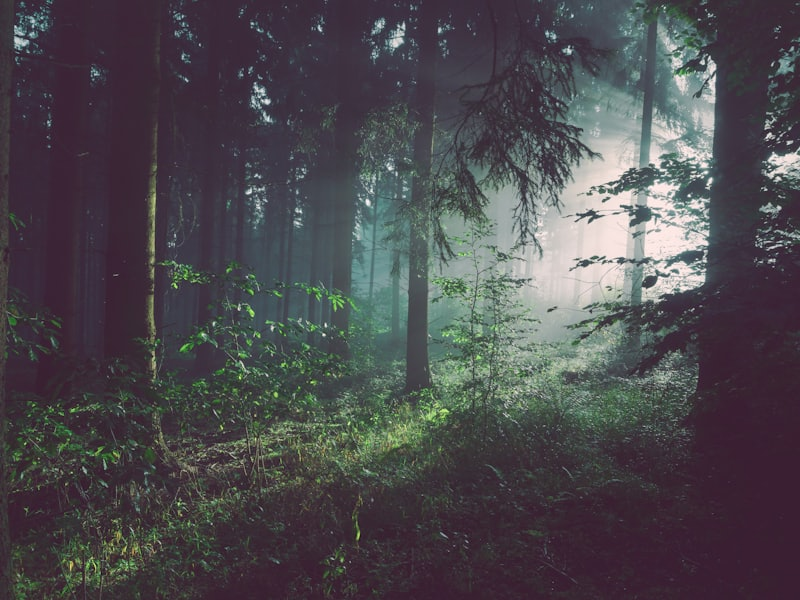

A system you can hand to an agent
Colors, type, and a few sections. Authors compose. They do not design a new layout for every URL.
100k
4.9
14
40
8
Popular starts
Three tiles. Title, one line, a picture, a link. Not a catalog of nine.

Locked palette
Authors paint from semantic names. They do not pick a new hex.
See tokensGet the whole toolkit
Copy plus media. The image is a photograph. The split is the section.
Why teams stay
Three reasons. Same card job. No fourth leftover tile.
A team behind it
Built and kept by people who ship the product, not a ticket queue.
Help that answers
Fast replies from the same people who wrote the code.
A way out
Try it. If it is not right, the guarantee is the way out.
The setup was straightforward. When we needed a related fix, the team answered immediately.
Find your starting point
A path chooser is three tiles.

One callout is enough
Use this strip once per view. Do not turn accent into a page wash.